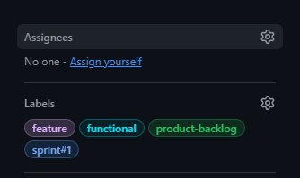
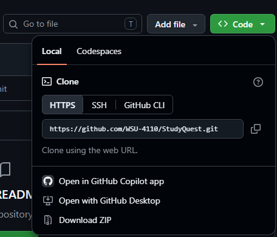

General team workflow for issues, branches, pull requests, pull request tracking, code review, merging, and closing work.
Issues are broken down into tasks and assigned to teammates. Find the GitHub issue that matches your task, then click Assign yourself on the right side under Assignees so the team can see who is working on it.

If you have not cloned the repo yet, make a folder where you want the project
to be. Then open your command terminal and go into that folder using the cd command:
cd <filepath>
Then go to your github repo and click the green Code button on GitHub, copy the HTTPS URL, and clone:

git clone https://github.com/WSU-4110/StudyQuest.git cd StudyQuest
If you already have the project, then update main before starting:
git checkout main git pull origin main
Create a branch that describes the implementation you are working on.
git checkout -b feature/authentication
Other examples:
feature/database-schema feature/dashboard feature/study-sets feature/supabase-integration
If the branch already exists, switch to it:
git checkout feature/authentication
Keep the branch focused on the issue it is meant to solve.
For example, feature/authentication could include:
After implementing your features, save your progress with a clear commit message.
git add . git commit -m "Implement login and signup authentication"
Good commit message examples:
Create study set form Add Supabase authentication Create questions database table Fix login validation
The first time you push a new branch, use:
git push -u origin feature/authentication
After that, when you make more commits on the same branch, you can usually just run:
git push
On GitHub, create a pull request from your feature branch into main.
base: main compare: feature/authentication
Example pull request:
Title: Implement user authentication Description: ## Changes - Added login page - Added signup page - Added logout functionality - Connected authentication to Supabase ## Related Issue Closes #14 ## Testing - Tested valid login - Tested invalid login - Tested signup - Tested logout
After creating a pull request, add it to the team's Excel Pull Request Tracker.
Include information such as:
Update the tracker again after the pull request is reviewed and merged.
A teammate should review the pull request before it is merged.
If a reviewer asks for changes, do not create a new branch or a new pull request. Stay on the same feature branch, fix the code, then save and push:
git add . git commit -m "Address review feedback" git push
Because the pull request is already linked to that branch, GitHub will show the new commits on the same pull request automatically.
Once the pull request is approved, merge it into main on GitHub.
Open the pull request and click the green Merge pull request button.
If the pull request contains Closes #14,
GitHub can automatically close issue #14 after the merge.
If the pull request only completes part of the issue, use:
Related to #14
and keep the issue open.
git checkout main git pull origin main git checkout -b feature/study-sets
Do not continue using the previous feature branch for unrelated work.
Issue = what needs to be done
Branch = where you work on it
Commit = saved progress
Pull Request = request to review and merge the work
Pull Request Tracker = team record of PR status and review information
Main = completed and reviewed version of the project